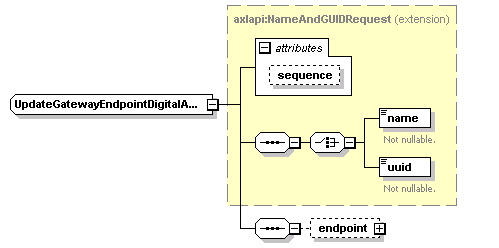

| diagram |  | ||||||||||||
| namespace | http://www.cisco.com/AXL/API/10.5 | ||||||||||||
| type | extension of axlapi:NameAndGUIDRequest | ||||||||||||
| properties |
|
||||||||||||
| children | name uuid endpoint | ||||||||||||
| used by |
|
||||||||||||
| attributes |
|
||||||||||||
| source | <xsd:complexType name="UpdateGatewayEndpointDigitalAccessBriReq"> <xsd:complexContent> <xsd:extension base="axlapi:NameAndGUIDRequest"> <xsd:sequence> <xsd:element name="endpoint" type="axlapi:XGatewayEndpointDigitalBri" minOccurs="0" maxOccurs="1"/> </xsd:sequence> </xsd:extension> </xsd:complexContent> </xsd:complexType> |